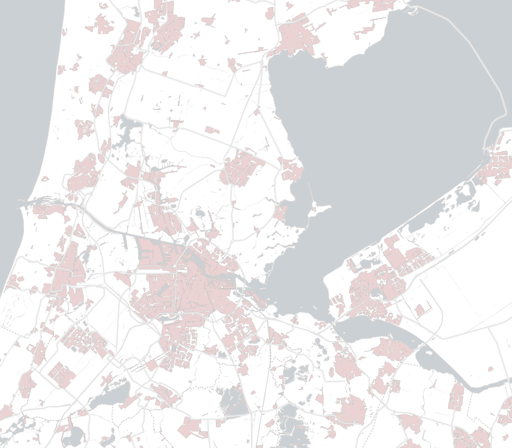

Almere and Lelystad
Each part of the Amsterdam Area has its own unique character, local attractions and industries. Click on an area to see what it has to offer.
- Opportunity to build your dream home
- Spacious, modern housing
- Family-friendly neighbourhoods
- Cutting-edge amenities in young cities
Discover Almere and Lelystad